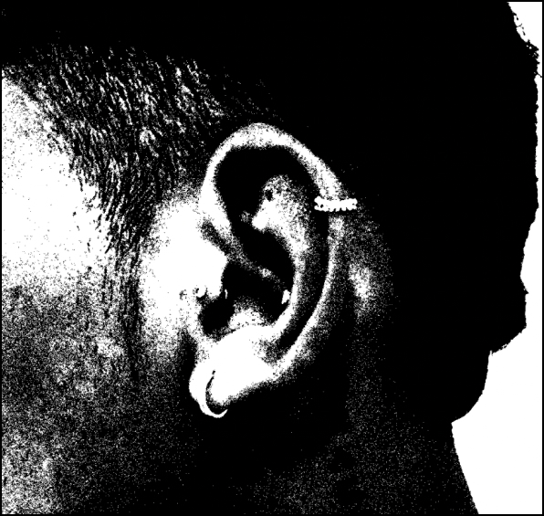

De podcast voor nieuwe ontdekkingen op het gebied van muziek en evenementen
Laatste afleveringen
- Aflevering 1
- Aflevering 2
- Aflevering 3
Ontdek wat onze luisteraars te zeggen hebben over onze podcast:
“Elke aflevering neemt me mee naar de beste feestjes en verhalen! Ik voel me altijd midden in de actie.”
Adrian, 33Amsterdam
“Altijd boeiend en vol verrassingen. Deze podcast brengt sfeer direct in mijn oren.”
Charlotte, 31's-Gravenhage
“Fantastische verhalen en geweldige evenementen! Het is alsof ik er zelf bij ben.”
Esmee, 23 Leiden“Elke aflevering neemt me mee naar de beste feestjes en verhalen! Ik voel me altijd midden in de actie.”
Adrian, 33Amsterdam
“Altijd boeiend en vol verrassingen. Deze podcast brengt sfeer direct in mijn oren.”
Charlotte, 31's-Gravenhage
“Fantastische verhalen en geweldige evenementen! Het is alsof ik er zelf bij ben.”
Esmee, 23Leiden
“De perfecte mix van muziek, verhalen en sfeer. Het voelt alsof ik elk feest live meemaak!”
Maurice, 25Amsterdam
“Elke aflevering neemt me mee naar de beste feestjes en verhalen! Ik voel me altijd midden in de actie.”
Max, 31Utrecht
“Altijd boeiend en vol verrassingen. Deze podcast brengt sfeer direct in mijn oren.”
Charlotte, 31's-Gravenhage
“De perfecte mix van muziek, verhalen en sfeer. Het voelt alsof ik elk feest live meemaak!”
Maurice, 25Amsterdam
“Elke aflevering neemt me mee naar de beste feestjes en verhalen! Ik voel me altijd midden in de actie.”
Max, 31Utrecht
“Altijd boeiend en vol verrassingen. Deze podcast brengt sfeer direct in mijn oren.”
Charlotte, 31's-Gravenhage